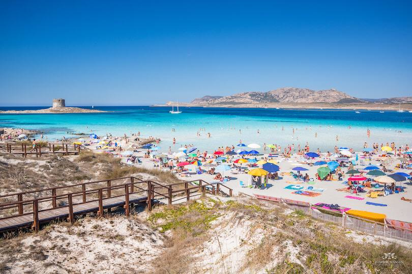
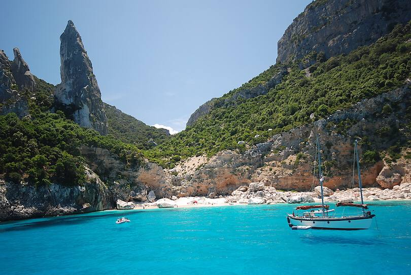

10 Best Beaches in Italy
1. Spiaggia dei Conigli, Lampedusa, Sicily
3. La Pelosa, Stintino

4. Spiaggia del Fornillo, Positano
5. Cala Goloritze, Sardinia

6. Marasusa Beach, Tropea, Calabria
7. Cala Rossa, Favignana, Sicily
9. Camogli Beach, Liguria